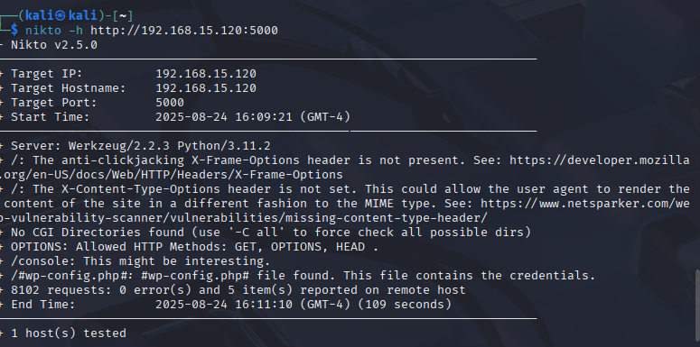

Relatório de Pentest - Juice Shop
Nome do Alvo: Juice Shop - 192.168.15.120
Analista: Felipe Nunes
Data: 24/08/2025
1. Reconhecimento do Alvo
1.1. Verificação de Acessibilidade (Ping)
O teste de ping confirmou que o alvo estava online e acessível na rede, respondendo ao IP 192.168.15.120.
Evidência:
1.2. Mapeamento de Portas (Nmap)
O escaneamento de portas com o Nmap identificou as portas 3000 e 5000 como abertas, indicando serviços web em execução.
Evidência:
2. Análise de Vulnerabilidades
2.1. Enumeração de Diretórios (Gobuster)
A ferramenta Gobuster foi usada para descobrir diretórios e encontrou os caminhos /console e /ui, que podem conter painéis administrativos ou informações sensíveis.
Evidência:
2.2. Varredura de Vulnerabilidades (Nikto)
O Nikto encontrou a ausência de cabeçalhos de segurança (X-Frame-Options e X-Content-Type-Options), o que torna a aplicação vulnerável a ataques como "clickjacking".
Evidência:
3. Exploração
3.1. Exposição de Informações de Usuários na API (VAMPI)
Ao interagir com a API da aplicação, foi descoberto um endpoint que expõe informações de usuários. Embora a imagem mostre um e-mail básico, essa falha pode vazar dados de todos os usuários, facilitando ataques de phishing ou força bruta.
Evidência:
3.2. Exposição de Usuário "admin" na API (VAMPI)
Outro endpoint da API, que lista livros, expõe o nome de usuário "admin" associado a um dos itens. Isso confirma a existência de uma conta de administrador e pode ser usado para ataques direcionados.
Evidência:

3.3. Exposição de Credenciais (VAMPI)
Em um dos endpoints de "debug" da API, a senha de um usuário foi exposta em texto claro. Esta é uma vulnerabilidade crítica que permite o acesso direto às contas comprometidas.
Evidência:
4. Conclusão
A aplicação Juice Shop, como esperado para um ambiente de teste, apresenta diversas vulnerabilidades de segurança. As falhas encontradas, desde a falta de cabeçalhos de segurança até a exposição de dados sensíveis e senhas em texto claro na API, representam um risco significativo se estivessem em um ambiente de produção real. Recomenda-se a correção imediata de todas as falhas para mitigar o risco de comprometimento.